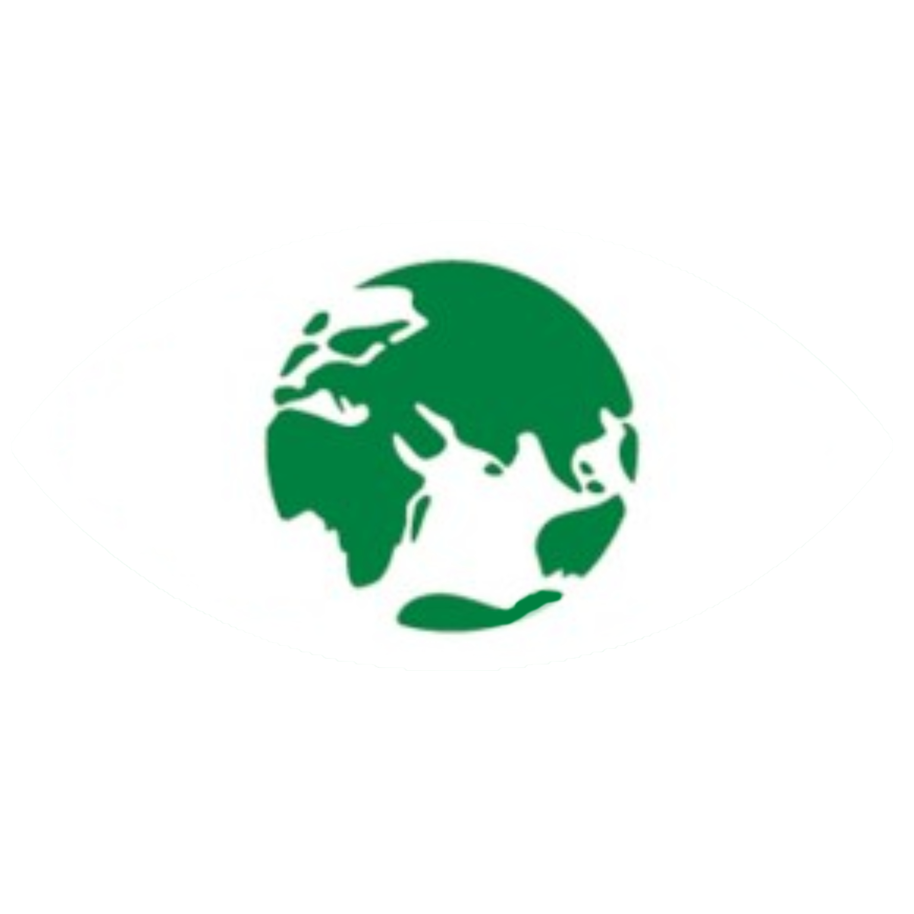

O projeto #Save The Planet foi desenvolvido durante o curso "Meu Primeiro Site" e busca conscientizar e ajudar na luta da humanidade contra as mudanças climáticas.
Quando se trata da nossa casa, todo nós fazemos sempre questão de mante-la limpa e arrumada, sem nenhum tipo de lixo jogado no chão e tudo bem perfumado. No entanto, quando nos direcionamos ao nosso planeta, que é também a nossa casa, de todos nós, apresentamos uma postura diferente, uma postura despreocupada e irresponsável.
Com o adventício da Revolução Industrial, o ser humano se deparou com tecnologias e escalas de produção nunca antes imaginadas, fato este que trouxe melhorias de vida significativas. Isto porém veio com um preço, uma vez que a 150 anos atrás não se havia preocupação alguma com o quesito ambiental por parte da humanidade.
Enfim, a conta chegou, e hoje nós nos deparamos com o que parece ser o início de uma série de respostas que a própria Terra quer nos dar. Quem nunca ouviu notícias do tipo: "O nível do mar subiu", "A camada de ozônio está se deteriorando", "A temperatura do planeta está aumentando"... Quem não conhece a gravidade de tais fatos , pensa que são apenas notícias midiáticas, sem se dar conta da ameaça que são, na realidade.


Greta Tintin Eleonora Ernman Thunberg é uma ativista ambiental sueca. É conhecida por ter protestado fora do prédio do parlamento sueco, e por ser a líder do movimento Greve das escolas pelo clima. Em dezembro de 2019, foi considerada personalidade do ano pela revista americana Time.

Quem acha que o ator norte-americano Leonardo Di Caprio é apenas mais um rostinho bonito está enganado. Diversas vezes ele já se mostrou defensor dos direitos humanos e um ativista ambiental, levantando causas e apoiando projetos que possam ajudar a preservar a fauna, a flora e o clima do planeta Terra.

Jared Leto é conhecido como o vocalista da banda 30 Seconds to Mars bem como por sua atuação nos filmes “Requiem for a Dream” e “O Clube de compras Dallas” (este último lhe rendeu um Oscar), mas alguns de seus trabalhos mais importantes foram para o meio ambiente. Jared é adepto do veganismo há mais de 20 anos e, sempre que pode, incentiva os outros a seguir seu exemplo.

Passarelas mundo a fora, Gisele Bündchen também representa o país em outra área. Há mais de seis anos, a Embaixadora da Boa Vontade do Pnuma tenta chamar atenção para o que vem acontecendo com o meio ambiente. No final de 2008, Gisele criou com sua família o Projeto Água Limpa, que visa implementar ações de gestão ambiental sustentável e promover a recuperação da mata ciliar das microbacias de Horizontina e Tucunduva (RS), região onde nasceu.